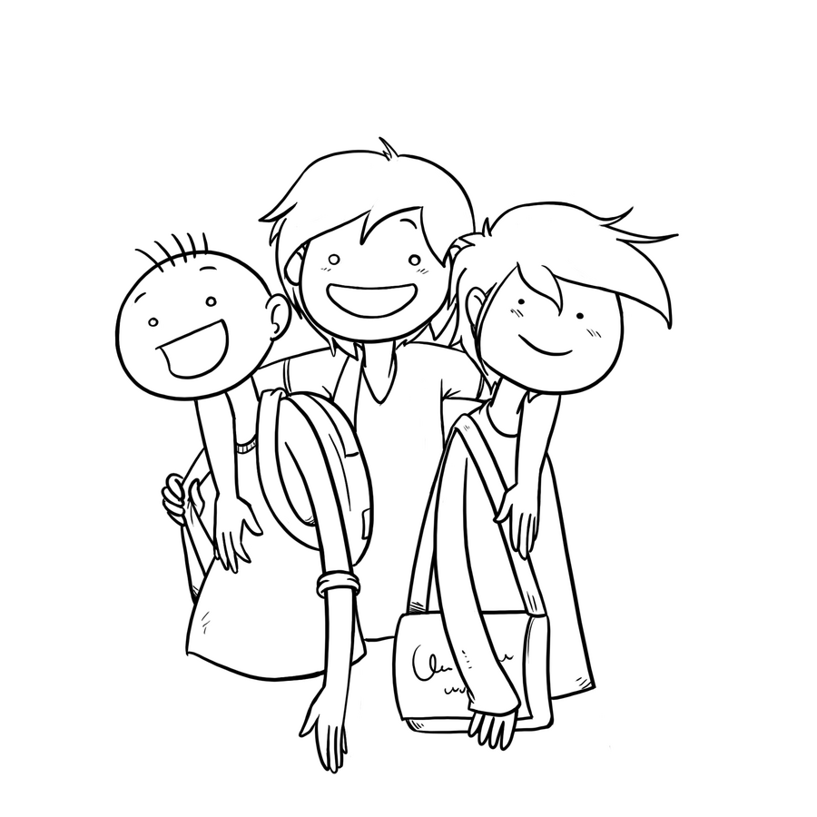

21 września 2026
RESQL w 8 nowych szkołach dzięki Konsorcjum Filantropijnemu
Dzięki wsparciu Konsorcjum Filantropijnego system RESQL działa w ośmiu kolejnych szkołach. Wzięliśmy też udział w pierwszym Philanthropic Consortium Global Summit w Pałacu Rzeczypospolitej w Warszawie. Ważną częścią spotkania był panel „Beyond hate” o hejcie, bullyingu i cyberprzemocy, czyli o zjawiskach, z którymi pracujemy na co dzień.
Zapraszamy kolejne firmy i organizacje: wsparcie bezpieczeństwa uczniów może być częścią strategii CSR i ESG.
Więcej na naszym Facebooku